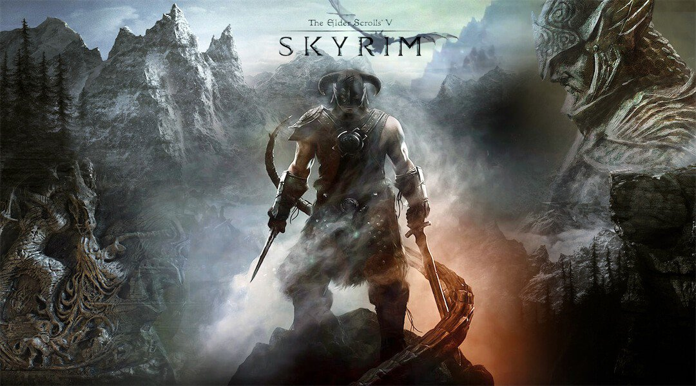
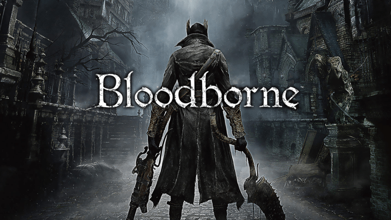

Minecraft
Minecraft is a sandbox game in which you have basically unlimited power; everything from building massive, intricate constructions to defeating bosses in duel is possible and there are no rules to tell you what to do first or how to do it.

Skyrim
The fifth game of The Elder Scrolls series, Skyrim, is, like its predecessors, a large open world rpg, where there aren't any actual classes; rather, you are given a large amounts of skills to learn, and a vast world in which to test them. There are quests to follow and a main storyline, but most players actively choose to ignore it and instead spend hours completing optional quests.
Dark Souls 3
This game is the third of its series, and is considered by many to be the series redemption, as it has much better gameplay, and the combat, on which everything is based, is much faster and more dynamic than in the two previous games. It is composed of different areas, followed by bosses, and out of the 25 bosses contained in the main game and its 2 DLCs, only 6 are often considered too easy or undeserving of the title.

Assassin's Creed I to IV
This series is recognised for having good gamplay, in which the player can climb practically any wall, as long as it's not completely flat, and has a satisfying combat system that allows the player to defeat enemies in many different ways, with some being more or less efficicent depending on the type of enemy. The games also have a good story each, and have interesting references to historic elements, as well as very accurate maps of real cities.

The Witcher 3
This game, the third of its series, is also considered its redemption, as the first two ones have notoriously bad gameplay and unaccurate stories, as they did not follow the books on which they were based. This game, however, remains closer to the source material while still following the first two's storyline, and has a much improved gameplay as well. It also has amazing graphics, with an ambience perfectly conveyed through both the soudtrack and the visuals.

Bloodborne
This game, while having been released before Dark Souls 3, is its successor it terms of story, and has a different style from the previous game; its combat is much faster and dynamic, and the gear possibilities are reduced, but each one is different from the others, which allows very different playstyles depending on what you choose. It also has amazing bosses, and an even better DLC that reveals part of the world's lore and adds large areas to explore and new ways to obtain rare items.
